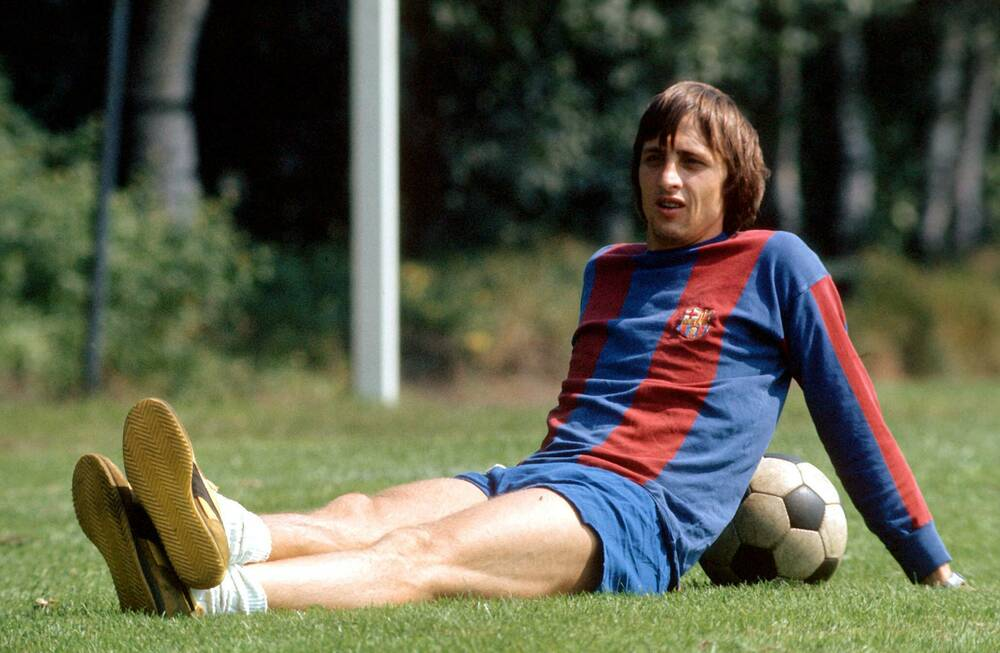

Johan Cruyff: o gênio que desenhou o futebol moderno
Por:Vinycius
Há jogadores que entram para a história pelos títulos. Outros, pelos gols. Johan Cruyff fez mais do que isso: mudou a maneira como o futebol é pensado. Seu legado vai muito além do que conquistou dentro de campo. As ideias que defendia como jogador e treinador ajudaram a moldar o futebol moderno e continuam presentes nas maiores equipes do mundo. Na década de 1970, Cruyff foi o principal rosto do Futebol Total, filosofia desenvolvida pelo Ajax e aperfeiçoada pela seleção holandesa. O conceito parecia simples, mas revolucionário: qualquer jogador poderia ocupar qualquer posição, desde que outro cobrisse o espaço deixado. Em vez de um time estático, surgia uma equipe dinâmica, em constante movimentação, onde inteligência tática era tão importante quanto habilidade com a bola. Dentro de campo, Cruyff era o jogador ideal para colocar essa ideia em prática. Dono de uma técnica refinada, visão de jogo impressionante e enorme capacidade de liderança, ele fazia o time funcionar como uma engrenagem. Não era apenas um atacante ou um armador; era o cérebro da equipe. Sua famosa jogada, conhecida como "Cruyff Turn", tornou-se um dos dribles mais icônicos da história do futebol e simboliza sua criatividade. Mas foi como treinador que seu impacto se tornou ainda maior. No Barcelona, Cruyff implantou um modelo baseado na posse de bola, na ocupação inteligente dos espaços e na construção das jogadas desde a defesa. Seu chamado "Dream Team" conquistou títulos importantes e estabeleceu uma identidade que o clube mantém até hoje. Essa filosofia também transformou a formação de jogadores na base. Em vez de priorizar apenas força física ou velocidade, o foco passou a ser atletas capazes de pensar o jogo, tomar decisões rápidas e atuar em diferentes funções. Dessa escola surgiram jogadores como Xavi Hernández, Andrés Iniesta e Lionel Messi, que cresceram em um ambiente fortemente influenciado pelas ideias de Cruyff. O impacto de sua filosofia ultrapassou o Barcelona. Pep Guardiola, um de seus discípulos mais famosos, levou esses conceitos ao auge no próprio Barcelona, no Bayern de Munique e no Manchester City, com o famoso "Tiki Taka", estilo de jogo efetivo que o time tem grande troca de passes, com o mínimo de toques possíveis, dificultando a perda da posse de bola, que é essencial em seu sistema. Hoje, equipes de diferentes países utilizam princípios como pressão alta, posse de bola, movimentação constante e troca de posições — todos elementos que têm suas raízes no trabalho de Cruyff. É claro que o futebol evoluiu por influência de muitos treinadores e jogadores ao longo das décadas. No entanto, poucos tiveram um impacto tão profundo quanto Johan Cruyff. Ele mostrou que vencer era importante, mas que a forma de jogar também poderia transformar o esporte. Seu legado permanece vivo em cada equipe que valoriza o jogo coletivo, a inteligência tática e o protagonismo com a bola nos pés. Mais do que um craque, Johan Cruyff foi um visionário. E, para muitos, o futebol moderno começou quando ele decidiu que o jogo poderia ser muito mais do que onze jogadores ocupando posições fixas: poderia ser um espetáculo de ideias em movimento.
